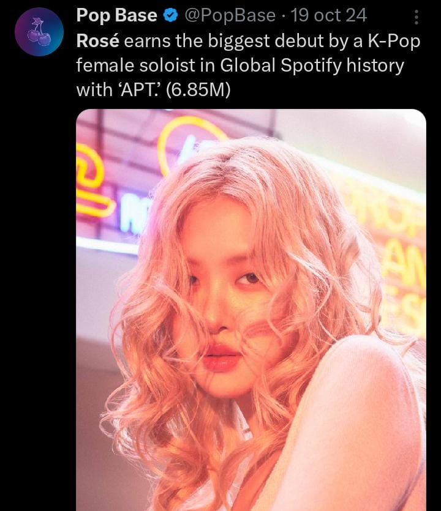
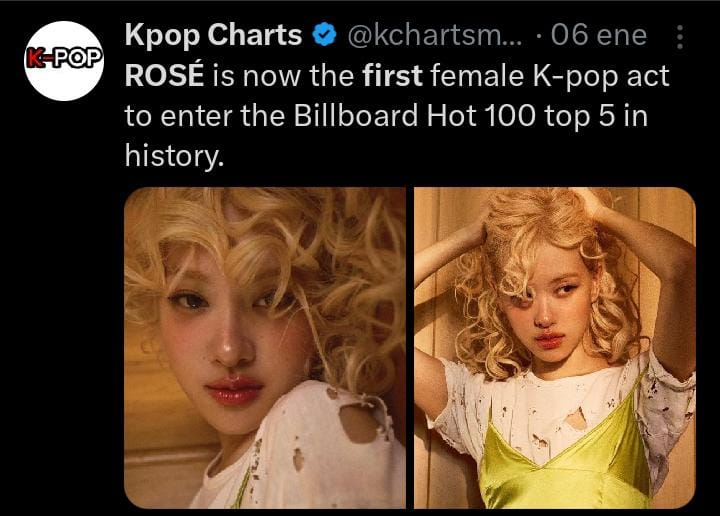

PRIMER ARTISTA
Desde el nuevo lanzamiento de su álbum 'ROSIE', ROSÉ, ha roto miles de récords que ningún artista de kpop había logrado hasta ahora, logrando así ROSÉ, ser una de las artistas más consumidas en todas las plataformas musicales, superando incluso a KENDRICK LAMAR.
Artículos importantes

